This project consists of two main themes: 1. Theme 1: Rock Paper Scissors Classification. 2. Theme 2: Face Emotion Recognition.
The goal is to train and evaluate different deep learning models (ResNet18, EfficientNet-B0, and a custom SimpleCNN) on these datasets and analyze their performance.
The dataset consists of images belonging to 3 classes: Rock, Paper, and Scissors. * Training Set: 2,520 images * Validation Set: 33 images * Test Set: 372 images
We implemented three models: * ResNet18: A residual learning framework to ease the training of networks that are substantially deeper than those used previously. Pre-trained on ImageNet. * EfficientNet-B0: A model that balances network depth, width, and resolution for better efficiency. Pre-trained on ImageNet. * SimpleCNN: A custom 3-layer Convolutional Neural Network with Max Pooling and Fully Connected layers.
| Model | Best Validation Accuracy |
|---|---|
| ResNet18 | 100.00% |
| EfficientNet-B0 | 100.00% |
| SimpleCNN | 100.00% |
ResNet18
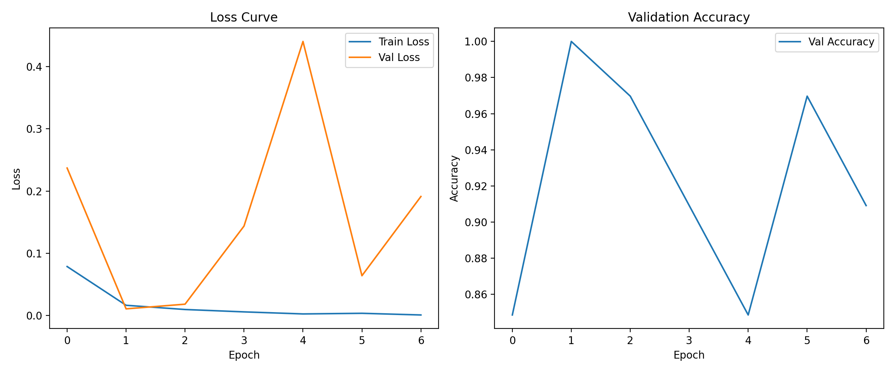
EfficientNet-B0
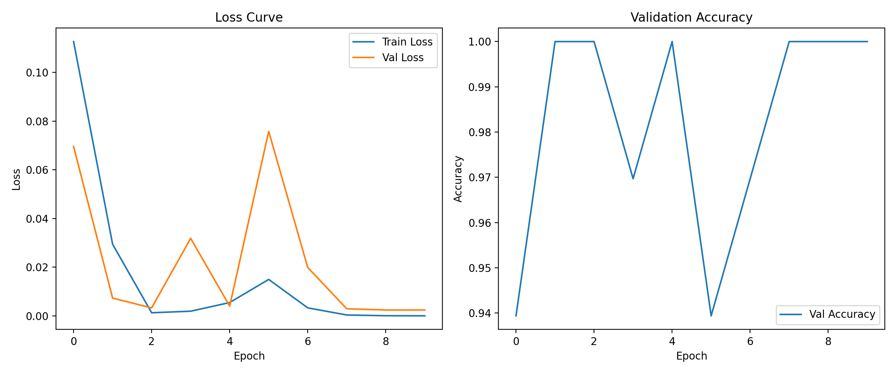
SimpleCNN
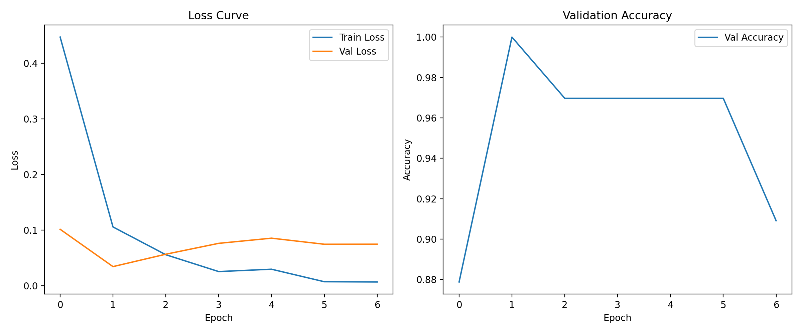
ResNet18
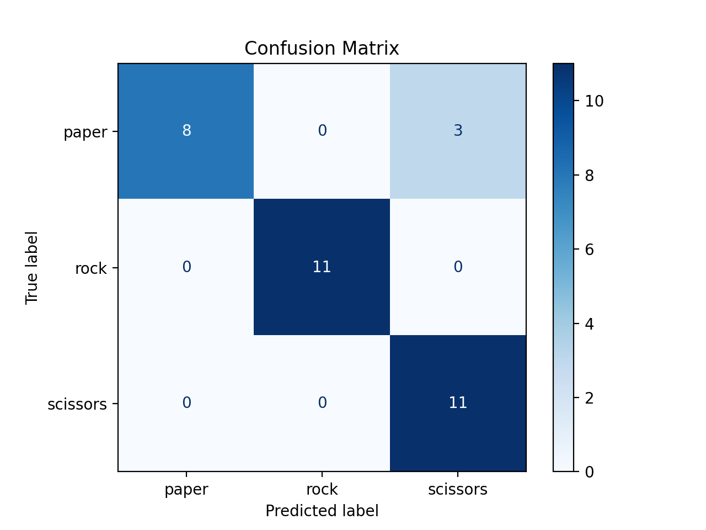
EfficientNet-B0
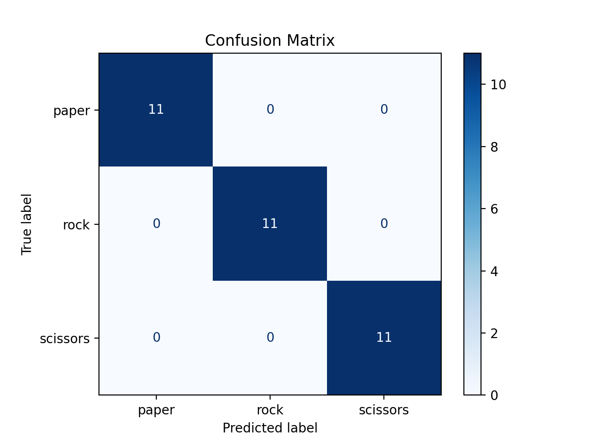
SimpleCNN
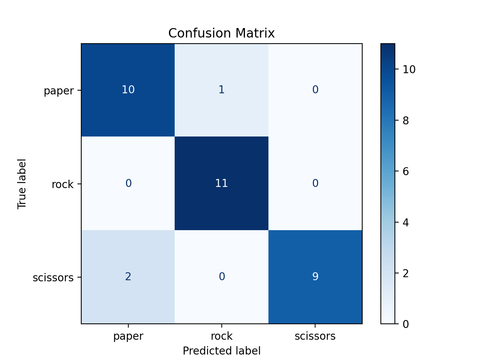
All three models achieved near-perfect accuracy (100%) on the validation set. This suggests that the "Rock Paper Scissors" dataset is relatively simple with distinct features for each class, or the validation set is small and easy to classify. Even the simple custom CNN was able to learn the features effectively.
For this specific task, all models performed exceptionally well. Future improvements could involve testing on a more challenging or diverse dataset to better differentiate model performance.
The dataset consists of facial images categorized into 7 emotions: Angry, Disgust, Fear, Happy, Neutral, Sad, Surprise. * Training Set: 39,822 images * Validation Set: 4,978 images * Test Set: 4,979 images
The same three architectures were used as in Theme 1, but adapted for 7 classes.
| Model | Best Validation Accuracy |
|---|---|
| ResNet18 | ~78.9% |
| EfficientNet-B0 | ~79.1% |
| SimpleCNN | ~66.7% |
ResNet18
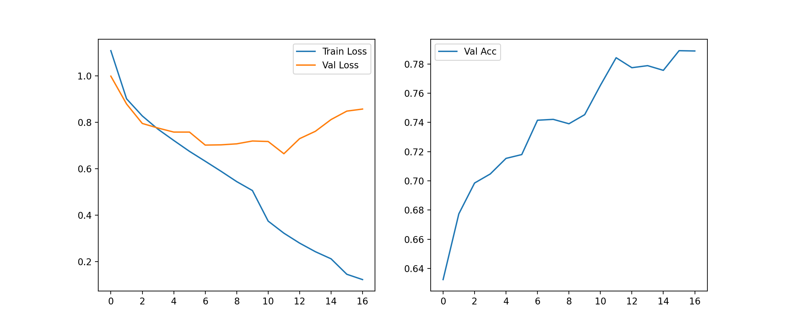
EfficientNet-B0
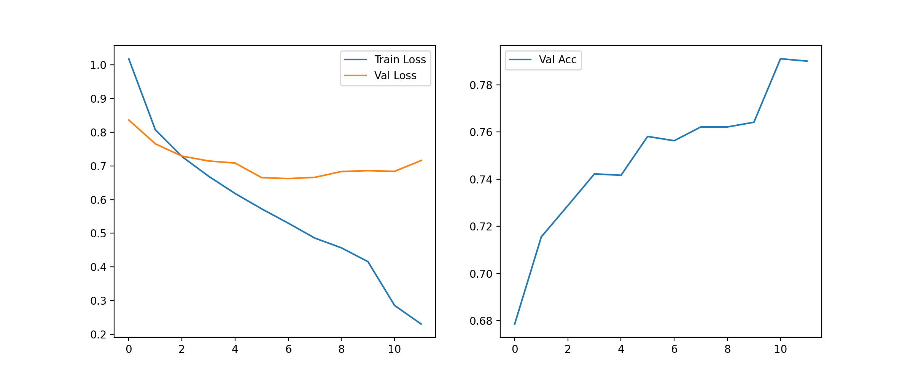
SimpleCNN
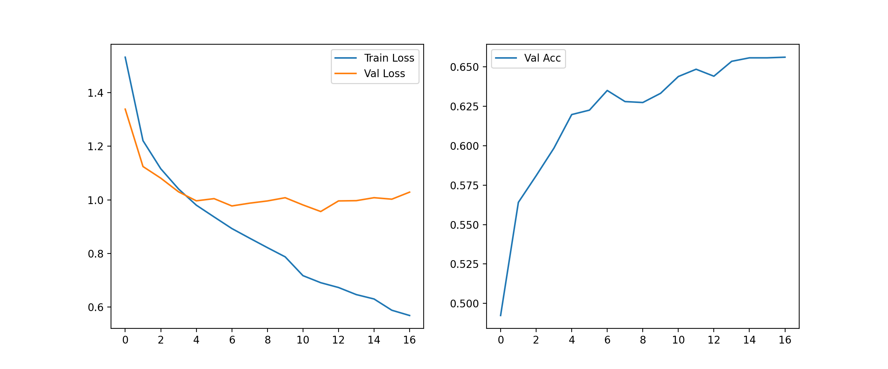
ResNet18
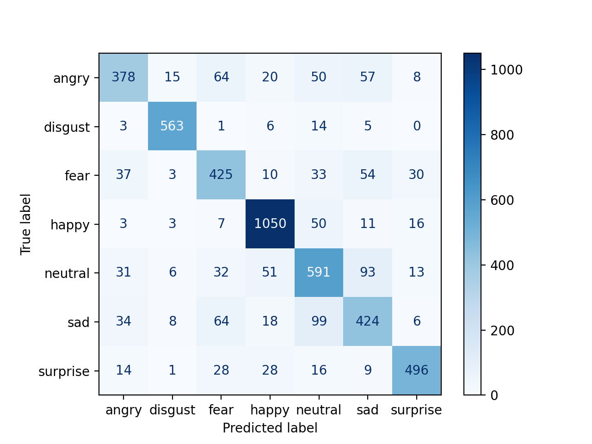
EfficientNet-B0
SimpleCNN
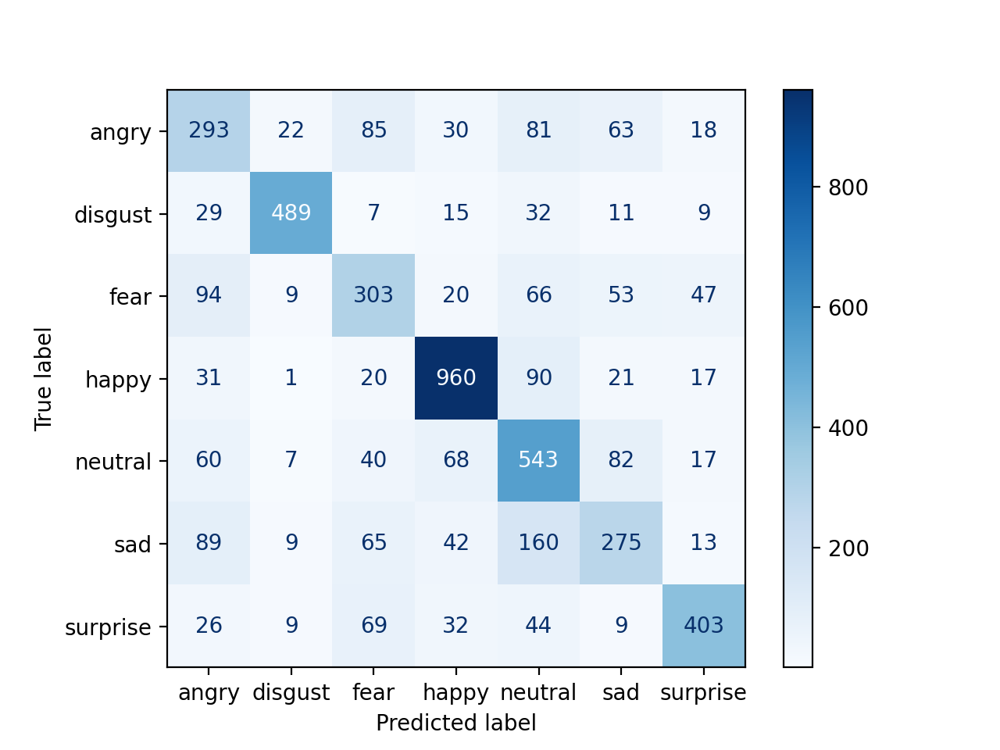
In this project, we successfully trained and evaluated models for two different computer vision tasks. Theme 1 demonstrated that simple tasks can be solved with basic models, while Theme 2 showed the necessity of advanced architectures for more complex pattern recognition. EfficientNet-B0 proved to be the most effective model overall.